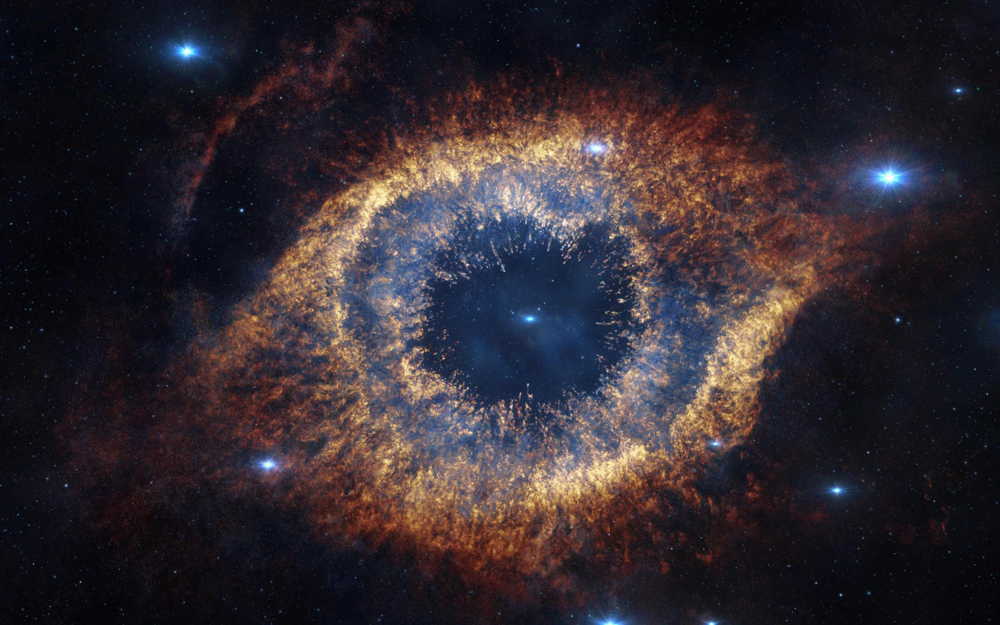

O que são Nebulosas? 
Nebulosas são nuvens formadas por poeira cósmica, hidrogênio e gases ionizados a partir de restos de estrelas que se desagregaram. Ao serem observadas, as nebulosas apresentam formatos irregulares semelhantes aos das nuvens, o que foi determinante para a escolha do nome desses corpos celestes, pois a palavra nebulosa provém de um termo em latim que significa nuvem.
Todas as nebulosas existentes na Via Láctea são formadas de material interestelar, caracterizado pela existência de grãos sólidos de poeira cósmica e gases, a partir disso, especula-se que as nebulosas presentes fora da Galáxia,assim como a Olho de Gato, tenham se formado da mesma forma. Uma nebulosa é composta 90% de hidrogênio e os outros 10% de hélio, carbono, oxigênio, e nitrogênio.
Olho de Gato

Hélix
Nebulosa de Hélix
Localizada somente a setecentos anos-luz de distância da Terra , na constelação de Aquarius, uma estrela parecida com o Sol está morrendo. Seus últimos milhares de anos têm produzido a Nebulosa Helix (NGC 7293), uma bem estudada e um exemplo bem próximo de nós de uma nebulosa planetária, típica dessa fase final da evolução estelar. O ponto branco no centro da Helix é a estrela central e quente da nebulosa planetária. Uma nebulosa que parece simples quando se olha pela primeira vez, a Helilx é atualmente entendida como tendo uma geometria surpreendentemente complexa.
Descoberta por Karl Ludwig Harding, provavelmente antes de 1824,
essa nebulosa é uma das mais próximas da Terra.